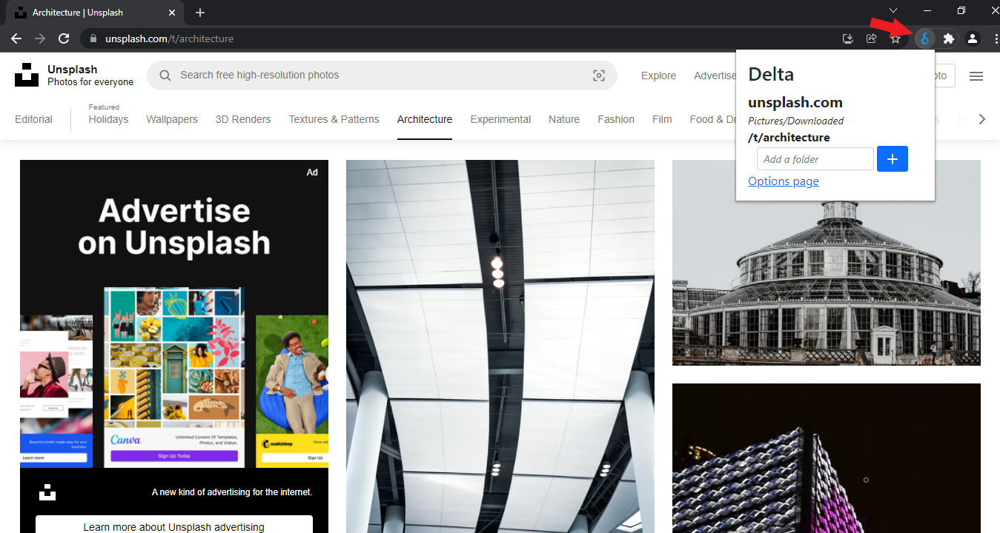

You can personalize your rules in the extension options page.
Before you do that, you should do a simple action to make sure Delta works as expected: go to your browser
settings and set the default download location to an upper level folder (such as your user
folder). This is how you do it in Chrome (for Edge is almost the same):
One more important thing: when you add a new rule, remember that the folder path you choose is considered to be relative to the browser's default download location you set earlier. For example, if you want to map an URL to the folder at C:\Users\Fabio\Documents\School\Chemistry, and your default download location is C:\Users\Fabio (like in the image above), you will simply enter Documents\School\Chemistry.
There are two ways you can add a new mapping rule.
If you want to add a domain/URL mapping rule simply navigate to the website you want to map and click the Delta icon in the top-right corner of your browser window (see image below)
If you want to add a filetype mapping rule instead, go to the extension options page, where you can also view, edit and remove your rules.
